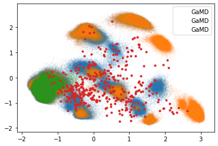
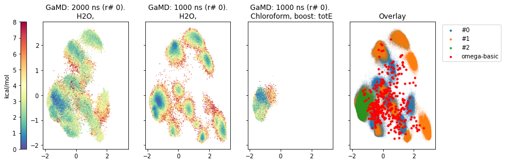
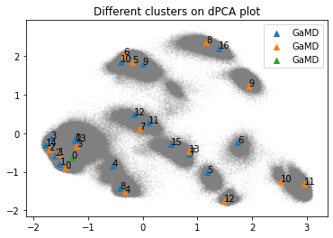

######## snakemake preamble start (automatically inserted, do not edit) ########
import sys; sys.path.extend(['/biggin/b147/univ4859/miniconda3/envs/snakemake/lib/python3.9/site-packages', '/biggin/b147/univ4859/research/03_macroconf/notebooks']); import pickle; snakemake = pickle.loads(b'\x80\x04\x95\x8e,\x00\x00\x00\x00\x00\x00\x8c\x10snakemake.script\x94\x8c\tSnakemake\x94\x93\x94)\x81\x94}\x94(\x8c\x05input\x94\x8c\x0csnakemake.io\x94\x8c\nInputFiles\x94\x93\x94)\x81\x94(\x8c&data/interim/refactor-test/22/NOE.json\x94\x8c\'data/interim/refactor-test/22/data.json\x94\x8cRdata/interim/refactor-test/22/H2O/11_GaMD_full/2000/0/ed6dd3148ef9b069_weights.dat\x94\x8cMdata/interim/refactor-test/22/H2O/11_GaMD_full/2000/0/ed6dd3148ef9b069_md.out\x94\x8cRdata/interim/refactor-test/22/H2O/11_GaMD_full/2000/0/ed6dd3148ef9b069_traj.netcdf\x94\x8cPdata/interim/refactor-test/22/H2O/11_GaMD_full/2000/0/ed6dd3148ef9b069_traj.ncdf\x94\x8c^data/processed/refactor-test/results/22/H2O/GaMD/2000/0/ed6dd3148ef9b069_clusters/clusters.pdb\x94\x8c?data/interim/refactor-test/22/H2O/1_make_topology/mc_sol.prmtop\x94\x8c1data/interim/refactor-test/22/omega/basic/mcs.pdb\x94\x8cVdata/processed/refactor-test/results/22/H2O/GaMD/2000/0/ed6dd3148ef9b069_dihedrals.dat\x94\x8cQdata/processed/refactor-test/results/22/H2O/GaMD/2000/0/ed6dd3148ef9b069_dPCA.dat\x94\x8c\\data/processed/refactor-test/results/22/H2O/GaMD/2000/0/ed6dd3148ef9b069_dPCA_weights_MC.dat\x94\x8cUdata/processed/refactor-test/results/22/H2O/GaMD/2000/0/ed6dd3148ef9b069_NOE_dist.dat\x94\x8cUdata/processed/refactor-test/results/22/H2O/GaMD/2000/0/ed6dd3148ef9b069_multiple.dat\x94\x8cRdata/interim/refactor-test/22/H2O/11_GaMD_full/1000/0/8374da5ea9cc35c0_weights.dat\x94\x8cMdata/interim/refactor-test/22/H2O/11_GaMD_full/1000/0/8374da5ea9cc35c0_md.out\x94\x8cRdata/interim/refactor-test/22/H2O/11_GaMD_full/1000/0/8374da5ea9cc35c0_traj.netcdf\x94\x8cPdata/interim/refactor-test/22/H2O/11_GaMD_full/1000/0/8374da5ea9cc35c0_traj.ncdf\x94\x8c^data/processed/refactor-test/results/22/H2O/GaMD/1000/0/8374da5ea9cc35c0_clusters/clusters.pdb\x94\x8c?data/interim/refactor-test/22/H2O/1_make_topology/mc_sol.prmtop\x94\x8cVdata/processed/refactor-test/results/22/H2O/GaMD/1000/0/8374da5ea9cc35c0_dihedrals.dat\x94\x8cQdata/processed/refactor-test/results/22/H2O/GaMD/1000/0/8374da5ea9cc35c0_dPCA.dat\x94\x8c\\data/processed/refactor-test/results/22/H2O/GaMD/1000/0/8374da5ea9cc35c0_dPCA_weights_MC.dat\x94\x8cUdata/processed/refactor-test/results/22/H2O/GaMD/1000/0/8374da5ea9cc35c0_NOE_dist.dat\x94\x8cUdata/processed/refactor-test/results/22/H2O/GaMD/1000/0/8374da5ea9cc35c0_multiple.dat\x94\x8cYdata/interim/refactor-test/22/Chloroform/11_GaMD_full/1000/0/d236cb661a6d3813_weights.dat\x94\x8cTdata/interim/refactor-test/22/Chloroform/11_GaMD_full/1000/0/d236cb661a6d3813_md.out\x94\x8cYdata/interim/refactor-test/22/Chloroform/11_GaMD_full/1000/0/d236cb661a6d3813_traj.netcdf\x94\x8cWdata/interim/refactor-test/22/Chloroform/11_GaMD_full/1000/0/d236cb661a6d3813_traj.ncdf\x94\x8cedata/processed/refactor-test/results/22/Chloroform/GaMD/1000/0/d236cb661a6d3813_clusters/clusters.pdb\x94\x8cFdata/interim/refactor-test/22/Chloroform/1_make_topology/mc_sol.prmtop\x94\x8c]data/processed/refactor-test/results/22/Chloroform/GaMD/1000/0/d236cb661a6d3813_dihedrals.dat\x94\x8cXdata/processed/refactor-test/results/22/Chloroform/GaMD/1000/0/d236cb661a6d3813_dPCA.dat\x94\x8ccdata/processed/refactor-test/results/22/Chloroform/GaMD/1000/0/d236cb661a6d3813_dPCA_weights_MC.dat\x94\x8c\\data/processed/refactor-test/results/22/Chloroform/GaMD/1000/0/d236cb661a6d3813_NOE_dist.dat\x94\x8c\\data/processed/refactor-test/results/22/Chloroform/GaMD/1000/0/d236cb661a6d3813_multiple.dat\x94e}\x94(\x8c\x06_names\x94}\x94(\x8c\x03noe\x94K\x00N\x86\x94\x8c\x04parm\x94K\x01N\x86\x94\x8c\tweights_0\x94K\x02N\x86\x94\x8c\x05out_0\x94K\x03N\x86\x94\x8c\x06traj_0\x94K\x04N\x86\x94\x8c\x0btraj_ncdf_0\x94K\x05N\x86\x94\x8c\nclusters_0\x94K\x06N\x86\x94\x8c\x05top_0\x94K\x07N\x86\x94\x8c\rcheminfoconfs\x94K\x08N\x86\x94\x8c\nred_dihe_0\x94K\tN\x86\x94\x8c\x06dPCA_0\x94K\nN\x86\x94\x8c\x11dPCA_weights_MC_0\x94K\x0bN\x86\x94\x8c\nNOE_dist_0\x94K\x0cN\x86\x94\x8c\nmultiple_0\x94K\rN\x86\x94\x8c\tweights_1\x94K\x0eN\x86\x94\x8c\x05out_1\x94K\x0fN\x86\x94\x8c\x06traj_1\x94K\x10N\x86\x94\x8c\x0btraj_ncdf_1\x94K\x11N\x86\x94\x8c\nclusters_1\x94K\x12N\x86\x94\x8c\x05top_1\x94K\x13N\x86\x94\x8c\nred_dihe_1\x94K\x14N\x86\x94\x8c\x06dPCA_1\x94K\x15N\x86\x94\x8c\x11dPCA_weights_MC_1\x94K\x16N\x86\x94\x8c\nNOE_dist_1\x94K\x17N\x86\x94\x8c\nmultiple_1\x94K\x18N\x86\x94\x8c\tweights_2\x94K\x19N\x86\x94\x8c\x05out_2\x94K\x1aN\x86\x94\x8c\x06traj_2\x94K\x1bN\x86\x94\x8c\x0btraj_ncdf_2\x94K\x1cN\x86\x94\x8c\nclusters_2\x94K\x1dN\x86\x94\x8c\x05top_2\x94K\x1eN\x86\x94\x8c\nred_dihe_2\x94K\x1fN\x86\x94\x8c\x06dPCA_2\x94K N\x86\x94\x8c\x11dPCA_weights_MC_2\x94K!N\x86\x94\x8c\nNOE_dist_2\x94K"N\x86\x94\x8c\nmultiple_2\x94K#N\x86\x94u\x8c\x12_allowed_overrides\x94]\x94(\x8c\x05index\x94\x8c\x04sort\x94eh{\x8c\tfunctools\x94\x8c\x07partial\x94\x93\x94h\x06\x8c\x19Namedlist._used_attribute\x94\x93\x94\x85\x94R\x94(h\x81)}\x94\x8c\x05_name\x94h{sNt\x94bh|h\x7fh\x81\x85\x94R\x94(h\x81)}\x94h\x85h|sNt\x94bh1h\nh3h\x0b\x8c\tweights_0\x94h\x0c\x8c\x05out_0\x94h\r\x8c\x06traj_0\x94h\x0e\x8c\x0btraj_ncdf_0\x94h\x0f\x8c\nclusters_0\x94h\x10\x8c\x05top_0\x94h\x11hAh\x12\x8c\nred_dihe_0\x94h\x13\x8c\x06dPCA_0\x94h\x14\x8c\x11dPCA_weights_MC_0\x94h\x15\x8c\nNOE_dist_0\x94h\x16\x8c\nmultiple_0\x94h\x17\x8c\tweights_1\x94h\x18\x8c\x05out_1\x94h\x19\x8c\x06traj_1\x94h\x1a\x8c\x0btraj_ncdf_1\x94h\x1b\x8c\nclusters_1\x94h\x1c\x8c\x05top_1\x94h\x1d\x8c\nred_dihe_1\x94h\x1e\x8c\x06dPCA_1\x94h\x1f\x8c\x11dPCA_weights_MC_1\x94h \x8c\nNOE_dist_1\x94h!\x8c\nmultiple_1\x94h"\x8c\tweights_2\x94h#\x8c\x05out_2\x94h$\x8c\x06traj_2\x94h%\x8c\x0btraj_ncdf_2\x94h&\x8c\nclusters_2\x94h\'\x8c\x05top_2\x94h(\x8c\nred_dihe_2\x94h)\x8c\x06dPCA_2\x94h*\x8c\x11dPCA_weights_MC_2\x94h+\x8c\nNOE_dist_2\x94h,\x8c\nmultiple_2\x94h-ub\x8c\x06output\x94h\x06\x8c\x0bOutputFiles\x94\x93\x94)\x81\x94(\x8c~data/processed/refactor-test/results/22/comparison/ed6dd3148ef9b069_8374da5ea9cc35c0_d236cb661a6d3813_omega_basic-pca_dihe.png\x94\x8c\x81data/processed/refactor-test/results/22/comparison/ed6dd3148ef9b069_8374da5ea9cc35c0_d236cb661a6d3813_omega_basic-cluster-pca.png\x94e}\x94(h/}\x94(\x8c\x08pca_dihe\x94K\x00N\x86\x94\x8c\x0bcluster_pca\x94K\x01N\x86\x94uhy]\x94(h{h|eh{h\x7fh\x81\x85\x94R\x94(h\x81)}\x94h\x85h{sNt\x94bh|h\x7fh\x81\x85\x94R\x94(h\x81)}\x94h\x85h|sNt\x94bh\xb4h\xb0h\xb6h\xb1ub\x8c\x06params\x94h\x06\x8c\x06Params\x94\x93\x94)\x81\x94(}\x94(\x8c\x08compound\x94\x8c\x0222\x94\x8c\x06method\x94\x8c\x04GaMD\x94\x8c\x07solvent\x94\x8c\x03H2O\x94\x8c\x07simtime\x94\x8c\x042000\x94\x8c\x02dt\x94\x8c\x050.002\x94\x8c\x07repeats\x94\x8c\x010\x94\x8c\x0bother_param\x94\x8c\x030.2\x94\x8c\x05igamd\x94\x8c\x03nan\x94\x8c\x06nstlim\x94\x8c\n1000000000\x94u}\x94(h\xc6\x8c\x0222\x94h\xc8\x8c\x04GaMD\x94h\xcah\xcbh\xcc\x8c\x041000\x94h\xce\x8c\x050.002\x94h\xd0\x8c\x010\x94h\xd2h\xd3h\xd4\x8c\x03nan\x94h\xd6\x8c\t500000000\x94u}\x94(h\xc6h\xc7h\xc8h\xc9h\xca\x8c\nChloroform\x94h\xcc\x8c\x041000\x94h\xce\x8c\x050.002\x94h\xd0\x8c\x010\x94h\xd2h\xd3h\xd4\x8c\x011\x94h\xd6\x8c\t500000000\x94ue}\x94(h/}\x94(\x8c\x08sample_0\x94K\x00N\x86\x94\x8c\x08sample_1\x94K\x01N\x86\x94\x8c\x08sample_2\x94K\x02N\x86\x94uhy]\x94(h{h|eh{h\x7fh\x81\x85\x94R\x94(h\x81)}\x94h\x85h{sNt\x94bh|h\x7fh\x81\x85\x94R\x94(h\x81)}\x94h\x85h|sNt\x94bh\xe9h\xc5h\xebh\xd8h\xedh\xe0ub\x8c\twildcards\x94h\x06\x8c\tWildcards\x94\x93\x94)\x81\x94(\x8c\rrefactor-test\x94\x8c\x0222\x94\x8c\x10ed6dd3148ef9b069\x94\x8c\x108374da5ea9cc35c0\x94\x8c\x10d236cb661a6d3813\x94\x8c\x05omega\x94\x8c\x05basic\x94e}\x94(h/}\x94(\x8c\x08exp_name\x94K\x00N\x86\x94\x8c\x0ccompound_dir\x94K\x01N\x86\x94\x8c\x07index_0\x94K\x02N\x86\x94\x8c\x07index_1\x94K\x03N\x86\x94\x8c\x07index_2\x94K\x04N\x86\x94\x8c\x07confgen\x94K\x05N\x86\x94\x8c\x04mode\x94K\x06N\x86\x94uhy]\x94(h{h|eh{h\x7fh\x81\x85\x94R\x94(h\x81)}\x94h\x85h{sNt\x94bh|h\x7fh\x81\x85\x94R\x94(h\x81)}\x94h\x85h|sNt\x94b\x8c\x08exp_name\x94h\xfc\x8c\x0ccompound_dir\x94h\xfd\x8c\x07index_0\x94h\xfe\x8c\x07index_1\x94h\xff\x8c\x07index_2\x94j\x00\x01\x00\x00\x8c\x07confgen\x94j\x01\x01\x00\x00\x8c\x04mode\x94j\x02\x01\x00\x00ub\x8c\x07threads\x94K\x04\x8c\tresources\x94h\x06\x8c\tResources\x94\x93\x94)\x81\x94(K\x04K\x01\x8c\x04/tmp\x94e}\x94(h/}\x94(\x8c\x06_cores\x94K\x00N\x86\x94\x8c\x06_nodes\x94K\x01N\x86\x94\x8c\x06tmpdir\x94K\x02N\x86\x94uhy]\x94(h{h|eh{h\x7fh\x81\x85\x94R\x94(h\x81)}\x94h\x85h{sNt\x94bh|h\x7fh\x81\x85\x94R\x94(h\x81)}\x94h\x85h|sNt\x94bj+\x01\x00\x00K\x04j-\x01\x00\x00K\x01j/\x01\x00\x00j(\x01\x00\x00ub\x8c\x03log\x94h\x06\x8c\x03Log\x94\x93\x94)\x81\x94\x8cudata/processed/refactor-test/notebooks/22/ed6dd3148ef9b069_8374da5ea9cc35c0_d236cb661a6d3813_omega_basic_compar.ipynb\x94a}\x94(h/}\x94\x8c\x08notebook\x94K\x00N\x86\x94shy]\x94(h{h|eh{h\x7fh\x81\x85\x94R\x94(h\x81)}\x94h\x85h{sNt\x94bh|h\x7fh\x81\x85\x94R\x94(h\x81)}\x94h\x85h|sNt\x94bjA\x01\x00\x00j>\x01\x00\x00ub\x8c\x06config\x94}\x94(\x8c\tcompounds\x94]\x94(K8K\x18K\x16K7e\x8c\x10cheminfo_confgen\x94]\x94\x8c\x05omega\x94a\x8c\x11confgen_paramters\x94}\x94\x8c\x05omega\x94]\x94(\x8c\x05basic\x94\x8c\nchloroform\x94es\x8c\thash_list\x94]\x94(]\x94(\x8c\x1094214a84a78d8392\x94\x8c\x10ea902b72328019c4\x94\x8c\x1005834cbd8c236ca0\x94\x8c\x0222\x94\x8c\x010\x94j`\x01\x00\x00e]\x94(\x8c\x10f85eb31757da7e52\x94\x8c\x1005834cbd8c236ca0\x94\x8c\x109eb48310b74aa061\x94\x8c\x0222\x94j`\x01\x00\x00j`\x01\x00\x00e]\x94(\x8c\x1010236f52ef18b2a3\x94\x8c\x1015ff3a3813ba7460\x94\x8c\x10e36fd3c2b58d633f\x94\x8c\x0222\x94j`\x01\x00\x00j`\x01\x00\x00e]\x94(\x8c\x10c530212023f40ad9\x94\x8c\x1010236f52ef18b2a3\x94\x8c\x1094214a84a78d8392\x94\x8c\x0222\x94j`\x01\x00\x00j`\x01\x00\x00e]\x94(\x8c\x100a303e31ccdf82a5\x94\x8c\x10c530212023f40ad9\x94\x8c\x1010236f52ef18b2a3\x94\x8c\x0222\x94j`\x01\x00\x00j`\x01\x00\x00e]\x94(\x8c\x100a303e31ccdf82a5\x94\x8c\x106223de6c169344e9\x94\x8c\x10f85eb31757da7e52\x94\x8c\x0222\x94j`\x01\x00\x00j`\x01\x00\x00e]\x94(\x8c\x100a303e31ccdf82a5\x94\x8c\x1015ff3a3813ba7460\x94\x8c\x10e36fd3c2b58d633f\x94\x8c\x0222\x94j`\x01\x00\x00j`\x01\x00\x00e]\x94(\x8c\x106223de6c169344e9\x94\x8c\x10f85eb31757da7e52\x94\x8c\x10b3332ce08307c920\x94\x8c\x0222\x94j`\x01\x00\x00j`\x01\x00\x00e]\x94(\x8c\x10b3332ce08307c920\x94\x8c\x101f323341d36478d5\x94\x8c\x10f8f83124ccdc7c13\x94\x8c\x0222\x94j`\x01\x00\x00j`\x01\x00\x00e]\x94(\x8c\x10e36fd3c2b58d633f\x94\x8c\x10f8f83124ccdc7c13\x94\x8c\x10282f14929802f7ac\x94\x8c\x0222\x94j`\x01\x00\x00j`\x01\x00\x00e]\x94(\x8c\x100a303e31ccdf82a5\x94\x8c\x10e36fd3c2b58d633f\x94\x8c\x10f8f83124ccdc7c13\x94\x8c\x0222\x94j`\x01\x00\x00j`\x01\x00\x00e]\x94(\x8c\x100a303e31ccdf82a5\x94\x8c\x109eb48310b74aa061\x94\x8c\x10282f14929802f7ac\x94\x8c\x0222\x94j`\x01\x00\x00j`\x01\x00\x00e]\x94(\x8c\x105ad86a1e5e790925\x94\x8c\x107e4cdc50cc70fc15\x94\x8c\x104574de591364a01f\x94\x8c\x0255\x94j`\x01\x00\x00j`\x01\x00\x00e]\x94(\x8c\x105ad86a1e5e790925\x94\x8c\x10395e86cd79c14300\x94\x8c\x10938ec71731842389\x94\x8c\x0255\x94j`\x01\x00\x00j`\x01\x00\x00e]\x94(\x8c\x108374da5ea9cc35c0\x94\x8c\x100a303e31ccdf82a5\x94\x8c\x1010236f52ef18b2a3\x94\x8c\x0222\x94j`\x01\x00\x00j`\x01\x00\x00e]\x94(\x8c\x10ed6dd3148ef9b069\x94\x8c\x108374da5ea9cc35c0\x94\x8c\x100a303e31ccdf82a5\x94\x8c\x0222\x94j`\x01\x00\x00j`\x01\x00\x00e]\x94(\x8c\x10ed6dd3148ef9b069\x94\x8c\x10c530212023f40ad9\x94\x8c\x1010236f52ef18b2a3\x94\x8c\x0222\x94j`\x01\x00\x00j`\x01\x00\x00e]\x94(\x8c\x103d00b0964201e088\x94\x8c\x1009a11fd633f3a72b\x94\x8c\x106a9359deeeab1adc\x94\x8c\x0224\x94j`\x01\x00\x00j`\x01\x00\x00e]\x94(\x8c\x103d00b0964201e088\x94\x8c\x105d7022b409750c68\x94\x8c\x10e92cb0e6ed121828\x94\x8c\x0224\x94j`\x01\x00\x00j`\x01\x00\x00e]\x94(\x8c\x10242ee4d4af3634ed\x94\x8c\x10660d1badff741862\x94\x8c\x105ad86a1e5e790925\x94\x8c\x0255\x94j`\x01\x00\x00j`\x01\x00\x00e]\x94(\x8c\x10ed6dd3148ef9b069\x94\x8c\x108374da5ea9cc35c0\x94\x8c\x103c523c7ca380f925\x94\x8c\x0222\x94j`\x01\x00\x00j`\x01\x00\x00e]\x94(\x8c\x108374da5ea9cc35c0\x94\x8c\x100a303e31ccdf82a5\x94\x8c\x103c523c7ca380f925\x94\x8c\x0222\x94j`\x01\x00\x00j`\x01\x00\x00e]\x94(\x8c\x10ed6dd3148ef9b069\x94\x8c\x109a100624325ec4cd\x94\x8c\x109eb48310b74aa061\x94\x8c\x0222\x94j`\x01\x00\x00j`\x01\x00\x00e]\x94(\x8c\x10242ee4d4af3634ed\x94\x8c\x106163f1ecc9f26d15\x94\x8c\x10938ec71731842389\x94\x8c\x0255\x94\x8c\x05omega\x94\x8c\x05basic\x94e]\x94(\x8c\x10ed6dd3148ef9b069\x94\x8c\x10db88602b153df078\x94\x8c\x10c74338f1c2e97967\x94\x8c\x0222\x94j`\x01\x00\x00j`\x01\x00\x00e]\x94(\x8c\x1004326f349933814b\x94\x8c\x10db88602b153df078\x94\x8c\x10c74338f1c2e97967\x94\x8c\x0222\x94j`\x01\x00\x00j`\x01\x00\x00e]\x94(\x8c\x10ed6dd3148ef9b069\x94\x8c\x10bbe75067f45d5efd\x94\x8c\x109a100624325ec4cd\x94\x8c\x0222\x94j`\x01\x00\x00j`\x01\x00\x00e]\x94(\x8c\x102088374558ed79c5\x94\x8c\x10b269c69e29e2b3a6\x94\x8c\x10d7cd9d09c7724d89\x94\x8c\x0256\x94\x8c\x05omega\x94\x8c\x05basic\x94e]\x94(\x8c\x108374da5ea9cc35c0\x94\x8c\x10b42d1cec1349e562\x94\x8c\x103d110be4b2d63f96\x94\x8c\x0222\x94j`\x01\x00\x00j`\x01\x00\x00e]\x94(\x8c\x10ed6dd3148ef9b069\x94\x8c\x101a8e577036845661\x94\x8c\x10bbe75067f45d5efd\x94\x8c\x0222\x94j`\x01\x00\x00j`\x01\x00\x00e]\x94(\x8c\x10ed6dd3148ef9b069\x94\x8c\x103d110be4b2d63f96\x94\x8c\x10b42d1cec1349e562\x94\x8c\x0222\x94j`\x01\x00\x00j`\x01\x00\x00e]\x94(\x8c\x10ed6dd3148ef9b069\x94\x8c\x108374da5ea9cc35c0\x94\x8c\x103c523c7ca380f925\x94\x8c\x0222\x94\x8c\x05omega\x94\x8c\x05basic\x94e]\x94(\x8c\x10ed6dd3148ef9b069\x94\x8c\x108374da5ea9cc35c0\x94\x8c\x105eedf239922efaee\x94\x8c\x0222\x94\x8c\x05omega\x94\x8c\x05basic\x94e]\x94(\x8c\x103d00b0964201e088\x94\x8c\x1009a11fd633f3a72b\x94\x8c\x105d7022b409750c68\x94\x8c\x0224\x94\x8c\x05omega\x94\x8c\x05basic\x94e]\x94(\x8c\x10459a7f09ce68039a\x94\x8c\x103fe88b3d3ed6d9d3\x94\x8c\x10d236cb661a6d3813\x94\x8c\x0222\x94j`\x01\x00\x00j`\x01\x00\x00e]\x94(\x8c\x10ed6dd3148ef9b069\x94\x8c\x10459a7f09ce68039a\x94\x8c\x101a8e577036845661\x94\x8c\x0222\x94j`\x01\x00\x00j`\x01\x00\x00e]\x94(\x8c\x10ed6dd3148ef9b069\x94\x8c\x108374da5ea9cc35c0\x94\x8c\x103c523c7ca380f925\x94\x8c\x0222\x94\x8c\x05omega\x94\x8c\nchloroform\x94e]\x94(\x8c\x10ed6dd3148ef9b069\x94\x8c\x10459a7f09ce68039a\x94\x8c\x10d236cb661a6d3813\x94\x8c\x0222\x94\x8c\x05omega\x94\x8c\nchloroform\x94e]\x94(\x8c\x10ed6dd3148ef9b069\x94\x8c\x108374da5ea9cc35c0\x94\x8c\x10d236cb661a6d3813\x94\x8c\x0222\x94\x8c\x05omega\x94\x8c\x05basic\x94e]\x94(\x8c\x10ed6dd3148ef9b069\x94\x8c\x108374da5ea9cc35c0\x94\x8c\x103c523c7ca380f925\x94\x8c\x0222\x94\x8c\x05rdkit\x94\x8c\x05basic\x94e]\x94(\x8c\x103d00b0964201e088\x94\x8c\x1009a11fd633f3a72b\x94\x8c\x105d7022b409750c68\x94\x8c\x0224\x94\x8c\x05rdkit\x94\x8c\x05basic\x94e]\x94(\x8c\x10242ee4d4af3634ed\x94\x8c\x106163f1ecc9f26d15\x94\x8c\x10938ec71731842389\x94\x8c\x0255\x94\x8c\x05rdkit\x94\x8c\x05basic\x94e]\x94(\x8c\x102088374558ed79c5\x94\x8c\x10b269c69e29e2b3a6\x94\x8c\x10d7cd9d09c7724d89\x94\x8c\x0256\x94\x8c\x05rdkit\x94\x8c\x05basic\x94ee\x8c\x06stride\x94K\n\x8c\x0ccluster_conf\x94}\x94(\x8c\x10242ee4d4af3634ed\x94K\x0f\x8c\x108374da5ea9cc35c0\x94K\n\x8c\x103c523c7ca380f925\x94K\n\x8c\x10ca1a37290d9e454e\x94K\x08\x8c\x109a100624325ec4cd\x94K\x06\x8c\x103d00b0964201e088\x94K\n\x8c\x10ed6dd3148ef9b069\x94K\x08u\x8c\x04ns_h\x94G@)\x00\x00\x00\x00\x00\x00\x8c\x08exp_name\x94\x8c\rrefactor-test\x94\x8c\tdata_name\x94\x8c\x1722-02-2021_MacroConf-v2\x94\x8c\x0bsample_file\x94\x8c\x0bsamples.tsv\x94\x8c\rsample_output\x94\x8c\x0fsamples_old.tsv\x94\x8c\nforcefield\x94\x8c1libs/forcefields/leaprc.protein.ff14SB_noterminal\x94\x8c\x0bDMSO_params\x94\x8c!libs/md_solvents/dmso/frcmod.dmso\x94\x8c\x08DMSO_box\x94\x8c!libs/md_solvents/dmso/dmsobox.off\x94\x8c\x11Chloroform_params\x94\x8c\x0cfrcmod.chcl3\x94\x8c\x16clustering_min_samples\x94}\x94(\x8c\x0222\x94K\nh\xe5K"u\x8c\x0eaMD_clustering\x94}\x94(\x8c\x0256\x94K\x0c\x8c\x0255\x94K\n\x8c\x0222\x94K\x07u\x8c\x0ecMD_clustering\x94}\x94(\x8c\x0222\x94K\n\x8c\x0224\x94K\x07\x8c\x0255\x94K\x0f\x8c\x0256\x94K\x0bu\x8c\x0fGaMD_clustering\x94}\x94(\x8c\x0222\x94K\x0c\x8c\x0224\x94K\n\x8c\x0256\x94K u\x8c\nmd_methods\x94]\x94(\x8c\x03cMD\x94\x8c\x04GaMD\x94\x8c\x03aMD\x94e\x8c\x0bcMD_repeats\x94K\x01\x8c\x08cMD_time\x94Kd\x8c\x0baMD_repeats\x94K\x01\x8c\x08aMD_time\x94Kd\x8c\x0cGaMD_repeats\x94K\x01\x8c\tGaMD_time\x94Kd\x8c\x08md_times\x94N\x8c\x04em_1\x94X\xc7\x01\x00\x00Minimize water\n System minimization.\n&cntrl\n imin=1, ntmin=1, !(Invoke Minimization)\n ntx=1, irest=0, !(read init. coords, no restart)\n maxcyc=20000, ncyc=15000, !(max. cycles switch to conj. grad.)\n drms=0.1, !(convergence criterion)\n ntpr=100, ntwr=100, iwrap=0, !(outputs)\n ntf=1, !(force eval all)\n cut=8.0, !(non-bonded cutoff)\n ntr=1, !(cartesian restraints)\n restraintmask="!:WAT", restraint_wt=10.0, !(restrain all but water)\n /\n\x94\x8c\x04em_2\x94X\xb3\x01\x00\x00Relax water\n LET WATER MOVE\n&cntrl\n imin=0,\n ntx=1, irest=0,\n ntpr=500, ntwx=500, ntwv=0, ntwe=0,\n ntwr=5000, !(outputs)\n t=0.0, dt=0.002, !(timestep)\n nstlim=10000, iwrap=1, !(steps, wrap to box)\n ntt=1, !(temp. control)\n temp0=300.0, tempi=200.0, tautp=0.5,\n ntp=1, pres0=1.0 !(pressure control)\n ntc=2, ntf=2, !(SHAKE)\n ntr=1, !(cart. restraints)\n restraintmask="!:WAT" , restraint_wt=10.0, !(restrain all but water)\n /\n\x94u\x8c\x04rule\x94\x8c\x10md_comp_analysis\x94\x8c\x0fbench_iteration\x94N\x8c\tscriptdir\x94\x8c5/biggin/b147/univ4859/research/03_macroconf/notebooks\x94ub.'); from snakemake.logging import logger; logger.printshellcmds = False; import os; os.chdir(r'/biggin/b147/univ4859/research/03_macroconf');
######## snakemake preamble end #########
import matplotlib
%matplotlib inline
#matplotlib.use("Agg")
import mdtraj as md
import numpy as np
import matplotlib.pyplot as plt
import scipy.cluster.hierarchy
from scipy.spatial.distance import squareform
import pandas as pd
sys.path.append(os.getcwd())
import src
from src.noe import compute_NOE_mdtraj, plot_NOE
from src.utils import json_load, dotdict
import src.pyreweight
from src.analyse import getDih, getOmega
from sklearn.manifold import TSNE
from sklearn.cluster import DBSCAN
from sklearn.neighbors import NearestNeighbors
from sklearn.decomposition import PCA
# read in stride from config file
stride = int(snakemake.config['stride'])
stride = 1
compound_index = int(snakemake.wildcards.compound_dir)
print(f"Analysing Compound {compound_index}")
Analysing Compound 22
compound = json_load(snakemake.input.parm)
multi = compound.multi
multi
if multi is not None:
multi = {v: k for k, v in multi.items()}
multiple = True
print('Multiple compounds detected')
else:
multiple = False
print('Single compound only (no exp. cis/trans data known)')
Single compound only (no exp. cis/trans data known)
# Load Trajectories
snakemake.input
['data/interim/refactor-test/22/NOE.json',
'data/interim/refactor-test/22/data.json',
'data/interim/refactor-test/22/H2O/11_GaMD_full/2000/0/ed6dd3148ef9b069_weights.dat',
'data/interim/refactor-test/22/H2O/11_GaMD_full/2000/0/ed6dd3148ef9b069_md.out',
'data/interim/refactor-test/22/H2O/11_GaMD_full/2000/0/ed6dd3148ef9b069_traj.netcdf',
'data/interim/refactor-test/22/H2O/11_GaMD_full/2000/0/ed6dd3148ef9b069_traj.ncdf',
'data/processed/refactor-test/results/22/H2O/GaMD/2000/0/ed6dd3148ef9b069_clusters/clusters.pdb',
'data/interim/refactor-test/22/H2O/1_make_topology/mc_sol.prmtop',
'data/interim/refactor-test/22/omega/basic/mcs.pdb',
'data/processed/refactor-test/results/22/H2O/GaMD/2000/0/ed6dd3148ef9b069_dihedrals.dat',
'data/processed/refactor-test/results/22/H2O/GaMD/2000/0/ed6dd3148ef9b069_dPCA.dat',
'data/processed/refactor-test/results/22/H2O/GaMD/2000/0/ed6dd3148ef9b069_dPCA_weights_MC.dat',
'data/processed/refactor-test/results/22/H2O/GaMD/2000/0/ed6dd3148ef9b069_NOE_dist.dat',
'data/processed/refactor-test/results/22/H2O/GaMD/2000/0/ed6dd3148ef9b069_multiple.dat',
'data/interim/refactor-test/22/H2O/11_GaMD_full/1000/0/8374da5ea9cc35c0_weights.dat',
'data/interim/refactor-test/22/H2O/11_GaMD_full/1000/0/8374da5ea9cc35c0_md.out',
'data/interim/refactor-test/22/H2O/11_GaMD_full/1000/0/8374da5ea9cc35c0_traj.netcdf',
'data/interim/refactor-test/22/H2O/11_GaMD_full/1000/0/8374da5ea9cc35c0_traj.ncdf',
'data/processed/refactor-test/results/22/H2O/GaMD/1000/0/8374da5ea9cc35c0_clusters/clusters.pdb',
'data/interim/refactor-test/22/H2O/1_make_topology/mc_sol.prmtop',
'data/processed/refactor-test/results/22/H2O/GaMD/1000/0/8374da5ea9cc35c0_dihedrals.dat',
'data/processed/refactor-test/results/22/H2O/GaMD/1000/0/8374da5ea9cc35c0_dPCA.dat',
'data/processed/refactor-test/results/22/H2O/GaMD/1000/0/8374da5ea9cc35c0_dPCA_weights_MC.dat',
'data/processed/refactor-test/results/22/H2O/GaMD/1000/0/8374da5ea9cc35c0_NOE_dist.dat',
'data/processed/refactor-test/results/22/H2O/GaMD/1000/0/8374da5ea9cc35c0_multiple.dat',
'data/interim/refactor-test/22/Chloroform/11_GaMD_full/1000/0/d236cb661a6d3813_weights.dat',
'data/interim/refactor-test/22/Chloroform/11_GaMD_full/1000/0/d236cb661a6d3813_md.out',
'data/interim/refactor-test/22/Chloroform/11_GaMD_full/1000/0/d236cb661a6d3813_traj.netcdf',
'data/interim/refactor-test/22/Chloroform/11_GaMD_full/1000/0/d236cb661a6d3813_traj.ncdf',
'data/processed/refactor-test/results/22/Chloroform/GaMD/1000/0/d236cb661a6d3813_clusters/clusters.pdb',
'data/interim/refactor-test/22/Chloroform/1_make_topology/mc_sol.prmtop',
'data/processed/refactor-test/results/22/Chloroform/GaMD/1000/0/d236cb661a6d3813_dihedrals.dat',
'data/processed/refactor-test/results/22/Chloroform/GaMD/1000/0/d236cb661a6d3813_dPCA.dat',
'data/processed/refactor-test/results/22/Chloroform/GaMD/1000/0/d236cb661a6d3813_dPCA_weights_MC.dat',
'data/processed/refactor-test/results/22/Chloroform/GaMD/1000/0/d236cb661a6d3813_NOE_dist.dat',
'data/processed/refactor-test/results/22/Chloroform/GaMD/1000/0/d236cb661a6d3813_multiple.dat']
#trajs = {}
methods = {}
repeats = {}
simtime = {}
solvent = {}
boosting = {}
for i in range(3):
#protein = md.load_frame(snakemake.input[f"traj_{i}"], 0, top=snakemake.input[f"top_{i}"])
#protein = protein.topology.select('protein')
# Load topology
#trajs[i] = md.load(snakemake.input[f"traj_{i}"], top=snakemake.input[f"top_{i}"], atom_indices=protein, stride=stride)
# save methods
methods[i] = snakemake.params[f"sample_{i}"]['method']
simtime[i] = snakemake.params[f"sample_{i}"]['simtime']
repeats[i] = snakemake.params[f"sample_{i}"]['repeats']
solvent[i] = snakemake.params[f"sample_{i}"]['solvent']
if snakemake.params[f"sample_{i}"]['igamd'] != "nan":
boost = snakemake.params[f"sample_{i}"]['igamd']
if boost == str(3):
boosting[i] = "boost: dual"
elif boost == str(2):
boosting[i] = "boost: dihe"
elif boost == str(1):
boosting[i] = "boost: totE"
else:
boosting[i] = ""
# Remove solvent
#trajs[i] = trajs[i].restrict_atoms(trajs[i].topology.select('protein'))
#if snakemake.params[f"sample_{i}"]['method'] == "GaMD":
#trajs[i] = trajs[i][int(26000/stride):]
#print("GAMD")
# Superpose
#trajs[i].superpose(trajs[i], 0)
#snakemake.input[f"out_{i}"]
#trajs
snakemake.input['out_0']
'data/interim/refactor-test/22/H2O/11_GaMD_full/2000/0/ed6dd3148ef9b069_md.out'
if snakemake.wildcards.confgen != "0":
chem_info_t = md.load(snakemake.input.cheminfoconfs)
print(chem_info_t)
<mdtraj.Trajectory with 400 frames, 71 atoms, 5 residues, without unitcells>
if multiple:
cis = []
trans = []
for i in range(3):
# ca_c = trajs[i].top.select(f"resid 0 and name CA C")
# n_ca_next = trajs[i].top.select(f"resid 1 and name N CA")
# omega = np.append(ca_c, n_ca_next)
# t_omega_rad = md.compute_dihedrals(trajs[i], [omega])
# t_omega_deg = np.abs(np.degrees(t_omega_rad))
# plt.plot(t_omega_deg)
# plt.hlines(90, 0, 50000, color='red')
cis_temp, trans_temp = src.utils.pickle_load(snakemake.input[f"multiple_{i}"])
cis.append(cis_temp)
trans.append(trans_temp)
#t_a[trans]
dihe_all = {}
for i in range(3):
dihe_all[i] = src.utils.pickle_load(snakemake.input[f"red_dihe_{i}"])
if snakemake.wildcards.confgen != "0":
dihe_conf = getDih(chem_info_t)
dihe_all[0].shape
(1000000, 30)
dihe = {}
pca = src.utils.pickle_load(snakemake.input.dPCA_1)#PCA(n_components=2)
dihe[0] = pca.transform(dihe_all[0])
dihe[0].shape
# Now apply the same transformation to second and third
dihe[1] = pca.transform(dihe_all[1])
dihe[2] = pca.transform(dihe_all[2])
if snakemake.wildcards.confgen != "0":
dihe_red_conf = pca.transform(dihe_conf)
for i in range(3):
plt.scatter(dihe[i][:,0], dihe[i][:,1], marker='.', s=0.5, alpha=0.1, label=methods[i])
plt.legend()
if snakemake.wildcards.confgen != "0":
plt.scatter(dihe_red_conf[:,0], dihe_red_conf[:,1], marker='.')
plt.show()

# How much of the variance is explained by the 2 components?
print(f"The two components explain {sum(pca.explained_variance_ratio_):.2%} of the variance")
The two components explain 52.66% of the variance
#snakemake.input[f"weights_{1}"]
# Reweighting:
weights = {}
weight_data = {}
for i in range(3):
weights[i] = src.utils.pickle_load(snakemake.input[f"dPCA_weights_MC_{i}"])
# if methods[i] != 'cMD':
# weight_data[i] = np.loadtxt(snakemake.input[f"weights_{i}"])
# weight_data[i] = weight_data[i][::stride]
# weights[i] = src.reweight(dihe[i], snakemake.input[f"weights_{i}"], 'amdweight_MC', weight_data[i])
# else:
# weights[i] = src.reweight(dihe[i], None, 'noweight')
weights[2].max()
13.474566392729406
weights[2].min()
0.0
zs = np.concatenate([weights[0], weights[1], weights[2]], axis=0)
min_, max_ = zs.min(), zs.max()
min_ = 0
max_ = 8
# Plot re-weighted PCA plots
fig, axs = plt.subplots(1,4, sharex='all', sharey='all')
fig.set_size_inches(16,4)
scat = {}
for i in range(3):
scat[i] = axs[i].scatter(dihe[i][:,0], dihe[i][:,1], c=weights[i], marker='.', cmap='Spectral_r', s=0.5, vmin=min_, vmax=max_)
axs[i].set_title(f"{methods[i]}: {simtime[i]} ns (r# {repeats[i]}).\n {solvent[i]}, {boosting[i]}")
axs[3].scatter(dihe[i][:,0], dihe[i][:,1], marker='.', s=0.5, alpha=0.1, label=f"#{i}")
if snakemake.wildcards.confgen != "0":
plt.scatter(dihe_red_conf[:,0], dihe_red_conf[:,1], marker='.', color='red', label=f"{snakemake.wildcards.confgen}-{snakemake.wildcards.mode}")
lgnd = axs[3].legend(bbox_to_anchor=(1.05,1), loc='upper left')
for handle in lgnd.legendHandles:
handle.set_sizes([30.0])
handle.set_alpha(1)
axs[3].set_title('Overlay')
colorbar = fig.colorbar(scat[0], ax=axs, label="kcal/mol", location='left', anchor=(1.5,0))
#fig.tight_layout()
fig.savefig(snakemake.output.pca_dihe, bbox_inches='tight')

# Load cluster data
clusters = []
for i in range(3):
print(snakemake.input[f'clusters_{i}'])
try:
clust_struct = md.load(snakemake.input[f'clusters_{i}'])
except:
clust_struct = None
clusters.append(clust_struct)
data/processed/refactor-test/results/22/H2O/GaMD/2000/0/ed6dd3148ef9b069_clusters/clusters.pdb
data/processed/refactor-test/results/22/H2O/GaMD/1000/0/8374da5ea9cc35c0_clusters/clusters.pdb
data/processed/refactor-test/results/22/Chloroform/GaMD/1000/0/d236cb661a6d3813_clusters/clusters.pdb
# Transform clusters in pca
clusters_dih = []
[clusters_dih.append(getDih(clus)) for clus in clusters]
cluster_pca = []
[cluster_pca.append(pca.transform(clus)) for clus in clusters_dih]
[None, None, None]
# Plot Clusters
fig, ax = plt.subplots()
for i in range(3):
ax.scatter(dihe[i][:,0], dihe[i][:,1], marker='.', s=0.5, alpha=0.1, c='grey')
# Plot clusters
for clus, method in zip(cluster_pca, list(methods.values())):
ax.scatter(clus[:,0], clus[:,1], marker='^', label=method)
for i, txt in enumerate(np.arange(len(clus[:,0]))):
ax.annotate(txt, (clus[i,0], clus[i,1], ))
ax.legend()
ax.set_title("Different clusters on dPCA plot")
fig.savefig(snakemake.output.cluster_pca)

print("Backbone RMSD between clusters. Array indices correspond to the cluster number in plot above.")
from itertools import combinations_with_replacement
cluster_pairs = list(combinations_with_replacement(clusters, 2))
method_pairs = list(combinations_with_replacement(list(methods.values()), 2))
for v, w in zip(cluster_pairs, method_pairs):
i, j = v
i_n, j_n = w
print(f"RMSD between {i_n} - {j_n}")
rmsd = np.zeros((i.n_frames, j.n_frames))
for a in range(i.n_frames):
for b in range(j.n_frames):
rmsd[a,b] = md.rmsd(i[a], j[b], atom_indices = i.top.select('backbone')) * 10
print(rmsd)
Backbone RMSD between clusters. Array indices correspond to the cluster number in plot above.
RMSD between GaMD - GaMD
[[0.00000000e+00 1.21022213e+00 1.35723615e+00 1.03750694e+00
1.44424808e+00 1.54721403e+00 1.34796882e+00 1.04486990e+00
1.35072482e+00 8.27648282e-01 1.38940382e+00 1.25898898e+00
1.29147112e+00 8.71032000e-01 1.26768816e+00 1.16353226e+00
1.40258491e+00]
[1.21022213e+00 0.00000000e+00 6.79472804e-01 5.91886699e-01
1.45834506e+00 1.77104568e+00 1.76767802e+00 1.56117499e+00
1.31897092e+00 1.46207821e+00 1.43353999e+00 1.64951026e+00
1.70039773e+00 1.29005814e+00 8.58871996e-01 1.70099866e+00
1.73840773e+00]
[1.35723615e+00 6.79472804e-01 0.00000000e+00 9.05123889e-01
1.37692153e+00 1.59790766e+00 1.68821228e+00 1.72049940e+00
1.43183887e+00 1.46739113e+00 1.17808366e+00 1.69609964e+00
1.80019069e+00 1.45066500e+00 1.05815685e+00 1.82808816e+00
1.73901689e+00]
[1.03750694e+00 5.91886699e-01 9.05123889e-01 0.00000000e+00
1.43878567e+00 1.71668673e+00 1.60356236e+00 1.55115080e+00
1.38883734e+00 1.32914197e+00 1.25670063e+00 1.71072948e+00
1.75486028e+00 1.25879478e+00 7.95539618e-01 1.61796260e+00
1.70377111e+00]
[1.44424808e+00 1.45834506e+00 1.37692153e+00 1.43878567e+00
0.00000000e+00 1.05184448e+00 1.39211416e+00 1.81983018e+00
9.79789555e-01 1.56632650e+00 1.38577890e+00 1.76606607e+00
1.80165470e+00 1.75867343e+00 1.74491656e+00 1.92834961e+00
1.96058857e+00]
[1.54721403e+00 1.77104568e+00 1.59790766e+00 1.71668673e+00
1.05184448e+00 0.00000000e+00 7.44550467e-01 1.50904894e+00
1.48072851e+00 1.49227881e+00 1.47026348e+00 1.45428824e+00
1.72079515e+00 1.90232337e+00 1.93198276e+00 1.76829147e+00
1.51956201e+00]
[1.34796929e+00 1.76767766e+00 1.68821192e+00 1.60356236e+00
1.39211464e+00 7.44550467e-01 0.00000000e+00 1.27416563e+00
1.67132044e+00 1.33244336e+00 1.36388493e+00 1.43582797e+00
1.66474628e+00 1.70392013e+00 1.82027757e+00 1.52198017e+00
1.35088813e+00]
[1.04486990e+00 1.56117499e+00 1.72049940e+00 1.55115056e+00
1.81983054e+00 1.50904894e+00 1.27416563e+00 0.00000000e+00
1.73059404e+00 1.20836592e+00 1.79410470e+00 6.68986320e-01
1.05799127e+00 1.37805092e+00 1.73939395e+00 1.00934064e+00
1.03433597e+00]
[1.35072482e+00 1.31897092e+00 1.43183935e+00 1.38883734e+00
9.79789555e-01 1.48072851e+00 1.67132044e+00 1.73059404e+00
0.00000000e+00 1.72134233e+00 1.72799480e+00 1.81227207e+00
1.72495472e+00 1.56339538e+00 1.59697795e+00 1.68999910e+00
2.08204961e+00]
[8.27648938e-01 1.46207821e+00 1.46739113e+00 1.32914245e+00
1.56632650e+00 1.49227881e+00 1.33244336e+00 1.20836592e+00
1.72134233e+00 1.09183008e-03 1.09582484e+00 1.28317952e+00
1.49518263e+00 1.22296464e+00 1.53098869e+00 1.43846107e+00
9.38737094e-01]
[1.38940430e+00 1.43353999e+00 1.17808318e+00 1.25670063e+00
1.38577926e+00 1.47026372e+00 1.36388493e+00 1.79410470e+00
1.72799480e+00 1.09582484e+00 0.00000000e+00 1.81130123e+00
1.89112878e+00 1.57545674e+00 1.39604163e+00 1.80129862e+00
1.47700918e+00]
[1.25898850e+00 1.64951026e+00 1.69609964e+00 1.71072912e+00
1.76606607e+00 1.45428777e+00 1.43582797e+00 6.68986320e-01
1.81227207e+00 1.28317952e+00 1.81130123e+00 0.00000000e+00
9.51204002e-01 1.57533872e+00 1.92373621e+00 1.33710527e+00
9.23144758e-01]
[1.29147112e+00 1.70039773e+00 1.80019069e+00 1.75486076e+00
1.80165470e+00 1.72079515e+00 1.66474628e+00 1.05799127e+00
1.72495425e+00 1.49518263e+00 1.89112878e+00 9.51203346e-01
0.00000000e+00 1.12051928e+00 1.65307224e+00 8.83095503e-01
1.42351651e+00]
[8.71032000e-01 1.29005814e+00 1.45066500e+00 1.25879478e+00
1.75867343e+00 1.90232337e+00 1.70392013e+00 1.37805045e+00
1.56339538e+00 1.22296429e+00 1.57545698e+00 1.57533872e+00
1.12051880e+00 0.00000000e+00 9.45833027e-01 9.33270752e-01
1.69597054e+00]
[1.26768816e+00 8.58871996e-01 1.05815685e+00 7.95539618e-01
1.74491632e+00 1.93198276e+00 1.82027757e+00 1.73939359e+00
1.59697795e+00 1.53098834e+00 1.39604163e+00 1.92373621e+00
1.65307260e+00 9.45833027e-01 0.00000000e+00 1.43220723e+00
1.91783667e+00]
[1.16353226e+00 1.70099866e+00 1.82808816e+00 1.61796260e+00
1.92834961e+00 1.76829147e+00 1.52197969e+00 1.00934064e+00
1.68999887e+00 1.43846107e+00 1.80129862e+00 1.33710527e+00
8.83095503e-01 9.33270752e-01 1.43220723e+00 0.00000000e+00
1.54103947e+00]
[1.40258491e+00 1.73840749e+00 1.73901689e+00 1.70377111e+00
1.96058857e+00 1.51956201e+00 1.35088813e+00 1.03433597e+00
2.08204961e+00 9.38737690e-01 1.47700918e+00 9.23144102e-01
1.42351651e+00 1.69597054e+00 1.91783667e+00 1.54103947e+00
0.00000000e+00]]
RMSD between GaMD - GaMD
[[1.18969905 1.29972589 1.00273824 0.1968143 1.29032087 0.87240845
1.40313756 1.63978922 1.45187616 1.36142492 1.77287316 1.49259281
1.46435332 1.04547906]
[0.21178408 0.6967895 0.63821554 1.1466285 1.31935132 1.49283195
1.37622046 1.50320697 1.79498625 1.78295493 1.72703087 1.91355014
1.58647609 1.68375731]
[0.70834959 0.22421362 0.93765825 1.33934093 1.4938035 1.4935298
1.12488604 1.24287438 1.72599506 1.75536799 1.64199483 1.89212799
1.66340256 1.77188015]
[0.58161551 0.89923728 0.43381941 1.00646484 1.39761925 1.3146354
1.2016834 1.38996267 1.75805283 1.74824429 1.73950183 1.91428077
1.58462048 1.6241796 ]
[1.44122267 1.36738014 1.27923667 1.48678315 1.00274229 1.46811891
1.28418708 1.5024966 1.88583684 1.89214337 1.42270982 1.58624911
1.0698837 1.80795193]
[1.70149267 1.60691452 1.56814277 1.57401991 1.48846793 1.38607609
1.4058311 1.63218558 1.36707199 1.34642076 1.38319957 1.24005556
1.23983788 1.45673382]
[1.67966616 1.71683145 1.60963464 1.36181414 1.65477288 1.25283062
1.32433534 1.55945969 1.233724 1.20180583 1.61923003 1.3588078
1.43311965 1.19553792]
[1.50421572 1.66940856 1.47490966 1.00079429 1.63549912 1.25777411
1.855775 2.07829881 1.15403497 0.96203363 1.73486018 1.17335367
1.43897605 0.3216399 ]
[1.30674183 1.45498347 1.23390269 1.37465131 0.26699209 1.68441391
1.60483122 1.79533958 2.06949592 1.96861601 1.55393386 1.5692687
0.83757389 1.72445047]
[1.43392205 1.38961697 1.32899892 0.85283947 1.66392684 0.2932514
1.18865597 1.44248188 0.98855013 0.93093222 1.68472397 1.34629953
1.71530497 1.17118049]
[1.41935468 1.15222275 1.34253049 1.43894553 1.76885366 1.04237461
0.31205529 0.69692636 1.40933442 1.48094702 1.59840596 1.73301673
1.7679069 1.72564018]
[1.6137104 1.61126673 1.57438493 1.21386218 1.7259655 1.32785797
1.90590632 2.1153152 0.98954082 1.04167914 1.68485546 1.18739915
1.47884667 0.77673942]
[1.73126149 1.72920239 1.62486804 1.28035498 1.625368 1.55528045
1.99892867 2.22900224 1.47004724 1.46898413 1.84917521 1.45617056
1.48791289 1.10422683]
[1.34474409 1.41529441 1.27903092 0.86557478 1.48907769 1.31589043
1.63231003 1.84173417 1.76408148 1.65604711 2.06667924 1.78726578
1.70603263 1.39261079]
[0.93050188 1.08065748 0.92622721 1.25157726 1.59659529 1.57455182
1.38745439 1.53614938 1.97259486 1.89125919 1.97134387 2.06042123
1.83396935 1.7780087 ]
[1.70239878 1.80181038 1.57054925 1.17826426 1.61686766 1.4977628
1.85671663 2.08898091 1.62385714 1.40142548 1.88031268 1.44702256
1.48406172 0.94408208]
[1.69554567 1.67813361 1.7086457 1.36617255 2.02020454 1.00424099
1.60297894 1.77622306 0.36915159 0.54763526 1.72044289 1.29326439
1.8107866 1.04397392]]
RMSD between GaMD - GaMD
[[1.14480245]
[0.47788742]
[0.71971148]
[0.73040003]
[1.34663641]
[1.61820638]
[1.7223345 ]
[1.46080005]
[1.34824133]
[1.30581236]
[1.39814925]
[1.44709539]
[1.60406232]
[1.34825099]
[1.06340945]
[1.7064302 ]
[1.59067464]]
RMSD between GaMD - GaMD
[[0.00000000e+00 7.36356616e-01 6.27364457e-01 1.12534785e+00
1.30496120e+00 1.45267904e+00 1.34166014e+00 1.47952890e+00
1.73892546e+00 1.70840013e+00 1.68241155e+00 1.84679246e+00
1.56730413e+00 1.62156725e+00]
[7.36356616e-01 0.00000000e+00 8.81846607e-01 1.28272748e+00
1.50179029e+00 1.41616678e+00 1.13074124e+00 1.28151774e+00
1.67440963e+00 1.71192276e+00 1.62474585e+00 1.85048342e+00
1.65603268e+00 1.72476602e+00]
[6.27363563e-01 8.81846607e-01 0.00000000e+00 9.79364872e-01
1.22478032e+00 1.28630745e+00 1.28525794e+00 1.52354383e+00
1.73945558e+00 1.69707763e+00 1.63388789e+00 1.77911496e+00
1.42125833e+00 1.55706871e+00]
[1.12534785e+00 1.28272748e+00 9.79364872e-01 0.00000000e+00
1.29792798e+00 9.12890077e-01 1.45734084e+00 1.68126607e+00
1.43672681e+00 1.35347915e+00 1.83257842e+00 1.53050971e+00
1.47752929e+00 1.03473175e+00]
[1.30496120e+00 1.50179029e+00 1.22478032e+00 1.29792798e+00
0.00000000e+00 1.62872612e+00 1.66041982e+00 1.86524415e+00
2.02120876e+00 1.91209459e+00 1.61081195e+00 1.52585149e+00
8.16939175e-01 1.64524889e+00]
[1.45267904e+00 1.41616678e+00 1.28630745e+00 9.12890077e-01
1.62872612e+00 0.00000000e+00 1.11382341e+00 1.42424822e+00
9.96356964e-01 9.57619011e-01 1.64856029e+00 1.35441852e+00
1.64769936e+00 1.21772337e+00]
[1.34166014e+00 1.13074124e+00 1.28525794e+00 1.45734048e+00
1.66041946e+00 1.11382341e+00 0.00000000e+00 6.11336112e-01
1.52059507e+00 1.55848598e+00 1.54455650e+00 1.74207568e+00
1.70387566e+00 1.78800726e+00]
[1.47952890e+00 1.28151751e+00 1.52354383e+00 1.68126607e+00
1.86524415e+00 1.42424822e+00 6.11336112e-01 0.00000000e+00
1.72553480e+00 1.76806700e+00 1.53698611e+00 1.86919165e+00
1.90645218e+00 2.01569629e+00]
[1.73892546e+00 1.67440963e+00 1.73945558e+00 1.43672681e+00
2.02120876e+00 9.96356964e-01 1.52059507e+00 1.72553480e+00
0.00000000e+00 5.68054974e-01 1.65429401e+00 1.29109633e+00
1.80766869e+00 1.13559616e+00]
[1.70839977e+00 1.71192276e+00 1.69707799e+00 1.35347915e+00
1.91209459e+00 9.57619011e-01 1.55848598e+00 1.76806700e+00
5.68054974e-01 0.00000000e+00 1.63512337e+00 1.07467914e+00
1.72873902e+00 8.90752017e-01]
[1.68241155e+00 1.62474585e+00 1.63388789e+00 1.83257842e+00
1.61081195e+00 1.64856029e+00 1.54455602e+00 1.53698611e+00
1.65429401e+00 1.63512337e+00 1.09183008e-03 1.08515382e+00
1.32334399e+00 1.68875265e+00]
[1.84679246e+00 1.85048342e+00 1.77911496e+00 1.53050971e+00
1.52585149e+00 1.35441852e+00 1.74207568e+00 1.86919212e+00
1.29109573e+00 1.07467914e+00 1.08515334e+00 0.00000000e+00
1.24572444e+00 1.07741892e+00]
[1.56730413e+00 1.65603268e+00 1.42125833e+00 1.47752929e+00
8.16939175e-01 1.64769936e+00 1.70387566e+00 1.90645218e+00
1.80766869e+00 1.72873902e+00 1.32334399e+00 1.24572504e+00
0.00000000e+00 1.42507005e+00]
[1.62156725e+00 1.72476602e+00 1.55706871e+00 1.03473175e+00
1.64524889e+00 1.21772337e+00 1.78800726e+00 2.01569629e+00
1.13559616e+00 8.90752017e-01 1.68875229e+00 1.07741892e+00
1.42507005e+00 0.00000000e+00]]
RMSD between GaMD - GaMD
[[0.50336802]
[0.62971342]
[0.56226492]
[1.08862305]
[1.32273805]
[1.32247353]
[1.3692795 ]
[1.56050205]
[1.63240683]
[1.62743199]
[1.61497951]
[1.7464596 ]
[1.54259062]
[1.58846486]]
RMSD between GaMD - GaMD
[[0.]]
NOE = src.noe.read_NOE(snakemake.input.noe)
# NOE_dist = {}
# NOE_store = {}
# NOE_dist_cis={}
# NOE_dist_trans={}
# NOE_store_cis = {}
# NOE_store_trans = {}
# for i in range(3):
# NOE_output = {}
# if methods[i] != "cMD":
# if multiple:
# fig, axs = plt.subplots(2,1)
# fig.set_size_inches(10,6)
# NOE_trans, NOE_cis = NOE
# NOE_cis_dict = NOE_cis.to_dict(orient='index')
# NOE_trans_dict = NOE_trans.to_dict(orient='index')
# if len(cis[i]) > 0:
# NOE_cis['md'],NOE_cis['lower'],NOE_cis['upper'],NOE_dist_cis[i], pmf_plot_cis = compute_NOE_mdtraj(NOE_cis_dict, trajs[i][cis[i]], snakemake.input[f"weights_{i}"], 1, weight_data=weight_data[i][cis[i]])
# NOE_output[f"{multi['cis']}"] = NOE_cis.to_dict(orient='index')
# # Deal with ambigous NOEs
# NOE_cis = NOE_cis.explode(['md', 'lower', 'upper'])
# # and ambigous/multiple values
# NOE_cis = NOE_cis.explode('NMR exp')
# fig, axs[1] = plot_NOE(NOE_cis, fig, axs[1])
# axs[1].set_title(f"Compound {multi['cis']} (cis)")
# NOE_store_cis[i] = NOE_cis
# else:
# print("Cis skipped because no frames are cis.")
# if len(trans[i]) > 0:
# NOE_trans['md'],NOE_trans['lower'],NOE_trans['upper'],NOE_dist_trans[i], pmf_plot_trans = compute_NOE_mdtraj(NOE_trans_dict, trajs[i][trans[i]], snakemake.input[f"weights_{i}"], 1, weight_data=weight_data[i][trans[i]])
# NOE_output[f"{multi['trans']}"] = NOE_trans.to_dict(orient='index')
# # Deal with ambigous NOEs
# NOE_trans = NOE_trans.explode(['md', 'lower', 'upper'])
# # and ambigous/multiple values
# NOE_trans = NOE_trans.explode('NMR exp')
# fig, axs[0] = plot_NOE(NOE_trans, fig, axs[0])
# axs[0].set_title(f"Compound {multi['trans']} (trans)")
# NOE_store_trans[i] = NOE_trans
# else:
# print("Trans skipped because no frames are cis")
# #NOE_output = {f"{multi[cis]}": NOE_cis, f"{multi[trans]}": NOE_trans}
# #src.utils.json_dump(snakemake.output.noe_result, NOE_output)
# else:
# NOE = src.noe.read_NOE(snakemake.input.noe)
# NOE_dict = NOE.to_dict(orient='index')
# NOE['md'], NOE['lower'], NOE['upper'], NOE_dist[i], pmf_plot = src.noe.compute_NOE_mdtraj(NOE_dict, trajs[i], snakemake.input[f"weights_{i}"], 1, weight_data=weight_data[i])
# plt.close()
# # Save NOE dict
# NOE_output = {f"{compound_index}": NOE.to_dict(orient='index')}
# # save as .json file
# #src.utils.json_dump(snakemake.output.noe_result, NOE_output)
# # Deal with ambigous NOEs
# #NOE = NOE.explode('md')
# NOE = NOE.explode(['md', 'lower', 'upper'])
# # and ambigous/multiple values
# NOE = NOE.explode('NMR exp')
# fig, ax = plot_NOE(NOE)
# ax.set_title(f"Compound {compound_index}. NOE")
# fig.tight_layout()
# #fig.savefig(snakemake.output.noe_plot)
# NOE_store[i] = NOE
# else:
# print("cMD - no reweighted NOEs performed.")
# if multiple:
# fig, axs = plt.subplots(2,1)
# fig.set_size_inches(10,6)
# NOE_trans, NOE_cis = NOE
# NOE_cis_dict = NOE_cis.to_dict(orient='index')
# NOE_trans_dict = NOE_trans.to_dict(orient='index')
# if len(cis[i]) > 0:
# NOE_cis['md'],_,_2,NOE_dist_cis, pmf_plot_cis = compute_NOE_mdtraj(NOE_cis_dict, t[cis[i]], snakemake.input.weights, 1, cis[i])
# NOE_output[f"{multi['cis']}"] = NOE_cis.to_dict(orient='index')
# # Deal with ambigous NOEs
# NOE_cis = NOE_cis.explode('md')
# # and ambigous/multiple values
# NOE_cis = NOE_cis.explode('NMR exp')
# fig, axs[1] = plot_NOE(NOE_cis, fig, axs[1])
# axs[1].set_title(f"Compound {multi['cis']} (cis)")
# else:
# print("Cis skipped because no frames are cis.")
# if len(trans[i]) > 0:
# NOE_trans['md'],_,_2,NOE_dist_trans, pmf_plot_trans = compute_NOE_mdtraj(NOE_trans_dict, t[trans[i]], snakemake.input.weights, 1, trans[i])
# NOE_output[f"{multi['trans']}"] = NOE_trans.to_dict(orient='index')
# # Deal with ambigous NOEs
# NOE_trans = NOE_trans.explode('md')
# # and ambigous/multiple values
# NOE_trans = NOE_trans.explode('NMR exp')
# fig, axs[0] = plot_NOE(NOE_trans, fig, axs[0])
# axs[0].set_title(f"Compound {multi['trans']} (trans)")
# else:
# print("Trans skipped because no frames are cis")
# #NOE_output = {f"{multi[cis]}": NOE_cis, f"{multi[trans]}": NOE_trans}
# src.utils.json_dump(snakemake.output.noe_result, NOE_output)
# else:
# NOE = src.noe.read_NOE(snakemake.input.noe)
# NOE_dict = NOE.to_dict(orient='index')
# NOE['md'], NOE['lower'], NOE['upper'], NOE_dist[i], pmf_plot = src.noe.compute_NOE_mdtraj(NOE_dict, trajs[i])
# plt.close()
# # Save NOE dict
# NOE_output = {f"{compound_index}": NOE.to_dict(orient='index')}
# # save as .json file
# #src.utils.json_dump(snakemake.output.noe_result, NOE_output)
# # Deal with ambigous NOEs
# #NOE = NOE.explode('md')
# NOE = NOE.explode(['md', 'lower', 'upper'])
# # and ambigous/multiple values
# NOE = NOE.explode('NMR exp')
# fig, ax = plot_NOE(NOE)
# ax.set_title(f"Compound {compound_index}. NOE")
# fig.tight_layout()
# #fig.savefig(snakemake.output.noe_plot)
# NOE_store[i] = NOE
# print(f"Done {i}")
NOE = src.noe.read_NOE(snakemake.input.noe)
NOE = NOE.explode('NMR exp')
NOE_dist = {}
NOE_store = {}
NOE_dist_cis={}
NOE_dist_trans={}
NOE_store_cis = {}
NOE_store_trans = {}
for i in range(3):
NOE_output = {}
if methods[i] != "cMD":
if multiple:
if len(cis[i]) > 0:
NOE_dist_cis[i] = src.utils.pickle_load(snakemake.input[f"NOE_dist_{0}"])[cis]
#NOE_store_cis[i] = NOE_cis
else:
print("Cis skipped because no frames are cis.")
if len(trans[i]) > 0:
NOE_dist_trans[i] = src.utils.pickle_load(snakemake.input[f"NOE_dist_{0}"])[trans]
#NOE_store_trans[i] = NOE_trans
else:
print("Trans skipped because no frames are cis")
else:
NOE_dist[i] = src.utils.pickle_load(snakemake.input[f"NOE_dist_{0}"])
#
# print(f"Done {i}")
# # plot PCA, colored by NOE
# NOE_select = 11
# plotting color deviation would be better maybe?
# activate below for plotting pca, colored by NOE value
# if not multiple:
# for NOE_select in range(len(NOE_dist[0])):
# if np.all(~np.isnan(NOE_dist[0][NOE_select][0])):
# zs = np.concatenate([NOE_dist[0][NOE_select][0], NOE_dist[1][NOE_select][0], NOE_dist[2][NOE_select][0]], axis=0)
# else:
# zs=np.array([0,0])
# min_, max_ = zs.min(), zs.max()
# continue
# # Plot re-weighted PCA plots
# for a in range(len(NOE_dist[1][NOE_select])):
# # here we select NOE_store[1], but 0, 2 could be used too (exp value is the same)
# NOE_exp = NOE[NOE.index == str(NOE_select)]['NMR exp'][0]
# #NOE_md = NOE_store[a][NOE_store[a].index == str(NOE_select)]['md'][a]
# fig, axs = plt.subplots(1,4, sharex='all', sharey='all')
# fig.set_size_inches(16,4)
# fig.suptitle(f"Compound {compound_index}. NOE #{NOE_select} (amb # {a}). exp={NOE_exp}.")
# for i in range(3):
# scat = axs[i].scatter(dihe[i][:,0], dihe[i][:,1], c=NOE_dist[i][NOE_select][a], marker='.', s=0.5, vmin=0, vmax=8)
# axs[i].set_title(f"{methods[i]}: {simtime[i]} ns (r# {repeats[i]})")
# axs[3].scatter(dihe[i][:,0], dihe[i][:,1], marker='.', s=0.5, alpha=0.1, label=methods[i])
# lgnd = axs[3].legend()
# for handle in lgnd.legendHandles:
# handle.set_sizes([30.0])
# handle.set_alpha(1)
# axs[3].set_title('Overlay')
# colorbar = fig.colorbar(scat, ax=axs, label="NOE [A]")
# if not multiple:
# for NOE_select in range(len(NOE_dist[0])):
# if np.all(~np.isnan(NOE_dist[0][NOE_select][0])):
# zs = np.concatenate([NOE_dist[0][NOE_select][0], NOE_dist[1][NOE_select][0], NOE_dist[2][NOE_select][0]], axis=0)
# else:
# zs=np.array([0,0])
# min_, max_ = zs.min(), zs.max()
# continue
# # Plot re-weighted PCA plots
# for a in range(len(NOE_dist[1][NOE_select])):
# # here we select NOE_store[1], but 0, 2 could be used too (exp value is the same)
# NOE_exp = NOE_store[1][NOE_store[1].index == str(NOE_select)]['NMR exp'][a]
# #NOE_md = NOE_store[a][NOE_store[a].index == str(NOE_select)]['md'][a]
# fig, axs = plt.subplots(1,4, sharex='all', sharey='all')
# fig.set_size_inches(16,4)
# fig.suptitle(f"Compound {compound_index}. NOE #{NOE_select} (amb # {a}). exp={NOE_exp}.")
# for i in range(3):
# scat = axs[i].scatter(dihe[i][:,0], dihe[i][:,1], c=NOE_dist[i][NOE_select][a], marker='.', s=0.5, vmin=0, vmax=8)
# axs[i].set_title(f"{methods[i]}: {simtime[i]} ns (r# {repeats[i]})")
# axs[3].scatter(dihe[i][:,0], dihe[i][:,1], marker='.', s=0.5, alpha=0.1, label=methods[i])
# lgnd = axs[3].legend()
# for handle in lgnd.legendHandles:
# handle.set_sizes([30.0])
# handle.set_alpha(1)
# axs[3].set_title('Overlay')
# colorbar = fig.colorbar(scat, ax=axs, label="NOE [A]")
# if not multiple:
# zs = np.concatenate([weights[0], weights[1], weights[2]], axis=0)
# min_, max_ = zs.min(), zs.max()
# if not multiple:
# # Plot NOE-PCA plots
# for a in range(len(NOE_dist[1][NOE_select])):
# NOE_exp = NOE_store[a][NOE_store[a].index == str(NOE_select)]['NMR exp'][a]
# NOE_md = NOE_store[a][NOE_store[a].index == str(NOE_select)]['md'][a]
# fig, axs = plt.subplots(1,4, sharex='all', sharey='all')
# fig.set_size_inches(16,4)
# fig.suptitle(f"Compound {compound_index}. NOE #{NOE_select}. ambiguous NOE# {a}. exp={NOE_exp}. md={NOE_md}")
# for i in range(3):
# scat = axs[i].scatter(dihe[i][:,0], NOE_dist[i][NOE_select][a], c=weights[i], cmap='Spectral_r', marker='.', s=0.5, vmin=min_, vmax=max_)
# axs[i].set_title(f"{methods[i]}: {simtime[i]} ns (r# {repeats[i]})")
# axs[3].scatter(dihe[i][:,0], dihe[i][:,1], marker='.', s=0.5, alpha=0.1, label=methods[i])
# lgnd = axs[3].legend()
# for handle in lgnd.legendHandles:
# handle.set_sizes([30.0])
# handle.set_alpha(1)
# axs[3].set_title('Overlay')
# colorbar = fig.colorbar(scat, ax=axs, label="kcal/mol")
# THIS WAS THE END OF THE SCRIPT. BELOW IS OLD.
# # 1d PMF reweighted NOEs
# NOE_output = {}
# if snakemake.params.method != "cMD":
# if multiple:
# fig, axs = plt.subplots(2,1)
# fig.set_size_inches(10,6)
# NOE_trans, NOE_cis = NOE
# NOE_cis_dict = NOE_cis.to_dict(orient='index')
# NOE_trans_dict = NOE_trans.to_dict(orient='index')
# if len(cis) > 0:
# NOE_cis['md'],_,_2,NOE_dist_cis, pmf_plot_cis = compute_NOE_mdtraj(NOE_cis_dict, t[cis], snakemake.input.weights, 1, cis)
# NOE_output[f"{multi['cis']}"] = NOE_cis.to_dict(orient='index')
# # Deal with ambigous NOEs
# NOE_cis = NOE_cis.explode('md')
# # and ambigous/multiple values
# NOE_cis = NOE_cis.explode('NMR exp')
# fig, axs[1] = plot_NOE(NOE_cis, fig, axs[1])
# axs[1].set_title(f"Compound {multi['cis']} (cis)")
# else:
# print("Cis skipped because no frames are cis.")
# if len(trans) > 0:
# NOE_trans['md'],_,_2,NOE_dist_trans, pmf_plot_trans = compute_NOE_mdtraj(NOE_trans_dict, t[trans], snakemake.input.weights, 1, trans)
# NOE_output[f"{multi['trans']}"] = NOE_trans.to_dict(orient='index')
# # Deal with ambigous NOEs
# NOE_trans = NOE_trans.explode('md')
# # and ambigous/multiple values
# NOE_trans = NOE_trans.explode('NMR exp')
# fig, axs[0] = plot_NOE(NOE_trans, fig, axs[0])
# axs[0].set_title(f"Compound {multi['trans']} (trans)")
# else:
# print("Trans skipped because no frames are cis")
# #NOE_output = {f"{multi[cis]}": NOE_cis, f"{multi[trans]}": NOE_trans}
# src.utils.json_dump(snakemake.output.noe_result, NOE_output)
# else:
# NOE = src.noe.read_NOE(NOE_path)
# NOE_dict = NOE.to_dict(orient='index')
# NOE['md'], NOE['lower'], NOE['upper'], _, pmf_plot = src.noe.compute_NOE_mdtraj(NOE_dict, t, snakemake.input.weights, 1)
# plt.close()
# # Save NOE dict
# NOE_output = {f"{compound_index}": NOE.to_dict(orient='index')}
# # save as .json file
# src.utils.json_dump(snakemake.output.noe_result, NOE_output)
# # Deal with ambigous NOEs
# #NOE = NOE.explode('md')
# NOE = NOE.explode(['md', 'lower', 'upper'])
# # and ambigous/multiple values
# NOE = NOE.explode('NMR exp')
# fig, ax = plot_NOE(NOE)
# ax.set_title(f"Compound {compound_index}. NOE")
# fig.tight_layout()
# fig.savefig(snakemake.output.noe_plot)
# else:
# print("cMD - no reweighted NOEs performed.")
# Load GaMD
# trajectory reference:
# t_x: production trajectory of method x
# t_x_full: full trajectory of method x (equilibration & production)
# t_g = md.load(snakemake.input.ga_traj, top=snakemake.input.top)
# print(t_g)
# # Remove solvent from trajectory
# t_g = t_g.restrict_atoms(t_g.topology.select('protein'))
# t_g
# t_g_full = t_g
# t_g = t_g[-50000:]
# t_g
# if has_cis_trans:
# # split trajectory into 2 by defined feature
# t_g_cis
# t_g_trans
# Load aMD
# t_a = md.load(snakemake.input.a_traj, top=snakemake.input.top)
# print(t_a)
# # Remove solvent from trajectory
# t_a = t_a.restrict_atoms(t_a.topology.select('protein'))
# t_a
# t_c = md.load(snakemake.input.c_traj, top=snakemake.input.top)
# print(t_c)
# # Remove solvent from trajectory
# t_c = t_c.restrict_atoms(t_c.topology.select('protein'))
# t_c
# t_g.superpose(t_g, 0)
# t_a.superpose(t_a, 0)
# t_c.superpose(t_c, 0)
# if multiple:
# ca_c = t_g.top.select(f"resid 0 and name CA C")
# n_ca_next = t_g.top.select(f"resid 1 and name N CA")
# omega = np.append(ca_c, n_ca_next)
# t_omega_rad = md.compute_dihedrals(t_a, [omega])
# t_omega_deg = np.abs(np.degrees(t_omega_rad))
# plt.plot(t_omega_deg)
# plt.hlines(90, 0, 50000, color='red')
# if multiple:
# cis = np.where(t_omega_deg <= 90)[0]
# trans = np.where(t_omega_deg > 90)[0]
# t_a[trans]
# omega = getOmega(t_c)
# omega_deg = np.abs(np.degrees(omega))
# plt.plot(omega_deg)
# plt.show()
# Principle Component Analysis (PCA)
# dihedral variable reference:
# x_dihe: (reduced) dihedral angles of method x (via PCA)
# x_dihe_all: full dihedral angles of method x
# g_dihe_all = getDih(t_g)
# a_dihe_all = getDih(t_a)
# c_dihe_all = getDih(t_c)
# pca4 = PCA(n_components=2)
# g_dihe = pca4.fit_transform(g_dihe_all)
# g_dihe.shape
# Now apply the same transformation to a_dihe, c_dihe
# a_dihe = pca4.transform(a_dihe_all)
# c_dihe = pca4.transform(c_dihe_all)
# plt.scatter(g_dihe[:,0], g_dihe[:,1], marker='.', s=0.5, alpha=1)
# plt.scatter(c_dihe[:,0], c_dihe[:,1], marker='.', s=0.5, alpha=0.02)
# plt.scatter(a_dihe[:,0], a_dihe[:,1], marker='.', s=0.5, alpha=0.02)
# plt.show()
# How much of the variance is explained by the 2 components?
# print(f"The two components explain {sum(pca4.explained_variance_ratio_):.2%} of the variance")
# g_weights = src.reweight(g_dihe, snakemake.input.ga_weights, 'amdweight_MC')
# a_weights = src.reweight(a_dihe, snakemake.input.a_weights, 'amdweight_MC')
# c_weights = src.reweight(c_dihe, None, 'noweight')
# # Plot re-weighted PCA plots
# fig, axs = plt.subplots(1,4, sharex='all', sharey='all')
# fig.set_size_inches(16,4)
# # for ax in axs:
# # ax.set
# axs[0].scatter(g_dihe[:,0], g_dihe[:,1], c=g_weights, marker='.', cmap='Spectral_r', s=0.5)
# axs[0].set_title('GaMD')
# axs[1].scatter(a_dihe[:,0], a_dihe[:,1], c=a_weights, marker='.', cmap='Spectral_r', s=0.5)
# axs[1].set_title('aMD')
# axs[2].scatter(c_dihe[:,0], c_dihe[:,1], c=c_weights, marker='.', cmap='Spectral_r', s=0.5)
# axs[2].set_title('cMD')
# axs[3].scatter(g_dihe[:,0], g_dihe[:,1], marker='.', s=0.5, alpha=1, label='GaMD')
# axs[3].scatter(a_dihe[:,0], a_dihe[:,1], marker='.', s=0.5, alpha=0.1, label='aMD')
# axs[3].scatter(c_dihe[:,0], c_dihe[:,1], marker='.', s=0.5, alpha=0.1, label='cMD')
# lgnd = axs[3].legend()
# for handle in lgnd.legendHandles:
# handle.set_sizes([30.0])
# handle.set_alpha(1)
# axs[3].set_title('Overlay')
# fig.savefig(snakemake.output.pca_dihe)
# # Load cluster data
# clus_g = md.load(snakemake.input.ga_clus)
# clus_a = md.load(snakemake.input.a_clus)
# clus_c = md.load(snakemake.input.c_clus)
# clusters = [clus_g, clus_a, clus_c]
# # Transform clusters in pca
# clusters_dih = []
# [clusters_dih.append(getDih(clus)) for clus in clusters]
# cluster_pca = []
# [cluster_pca.append(pca4.transform(clus)) for clus in clusters_dih]
# # Plot Clusters
# fig, ax = plt.subplots()
# methods = ["GaMD", "aMD", "cMD"]
# ax.scatter(g_dihe[:,0], g_dihe[:,1], marker='.', s=0.5, alpha=0.1, c='grey')
# ax.scatter(a_dihe[:,0], a_dihe[:,1], marker='.', s=0.5, alpha=0.1, c='grey')
# ax.scatter(c_dihe[:,0], c_dihe[:,1], marker='.', s=0.5, alpha=0.1, c='grey')
# # Plot clusters
# for clus, method in zip(cluster_pca, methods):
# ax.scatter(clus[:,0], clus[:,1], marker='^', label=method)
# for i, txt in enumerate(np.arange(len(clus[:,0]))):
# ax.annotate(txt, (clus[i,0], clus[i,1], ))
# ax.legend()
# ax.set_title("Different clusters on dPCA plot")
# fig.savefig(snakemake.output.cluster_pca)
# print("Backbone RMSD between clusters. Array indices correspond to the cluster number in plot above.")
# from itertools import combinations_with_replacement
# cluster_pairs = list(combinations_with_replacement(clusters, 2))
# method_pairs = list(combinations_with_replacement(methods, 2))
# for v, w in zip(cluster_pairs, method_pairs):
# i, j = v
# i_n, j_n = w
# print(f"RMSD between {i_n} - {j_n}")
# rmsd = np.zeros((i.n_frames, j.n_frames))
# for a in range(i.n_frames):
# for b in range(j.n_frames):
# rmsd[a,b] = md.rmsd(i[a], j[b], atom_indices = i.top.select('backbone')) * 10
# print(rmsd)